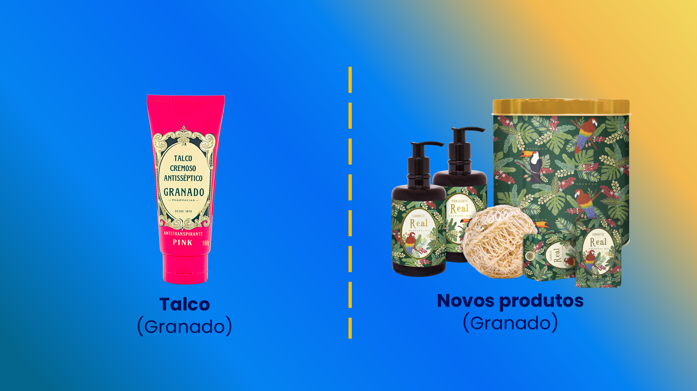
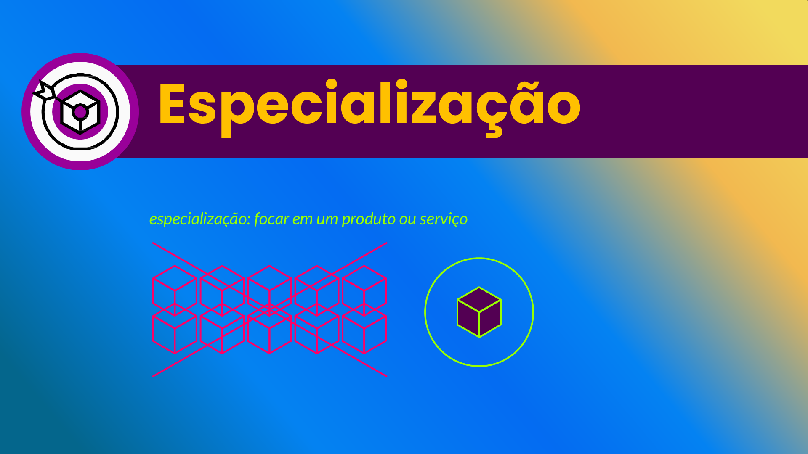
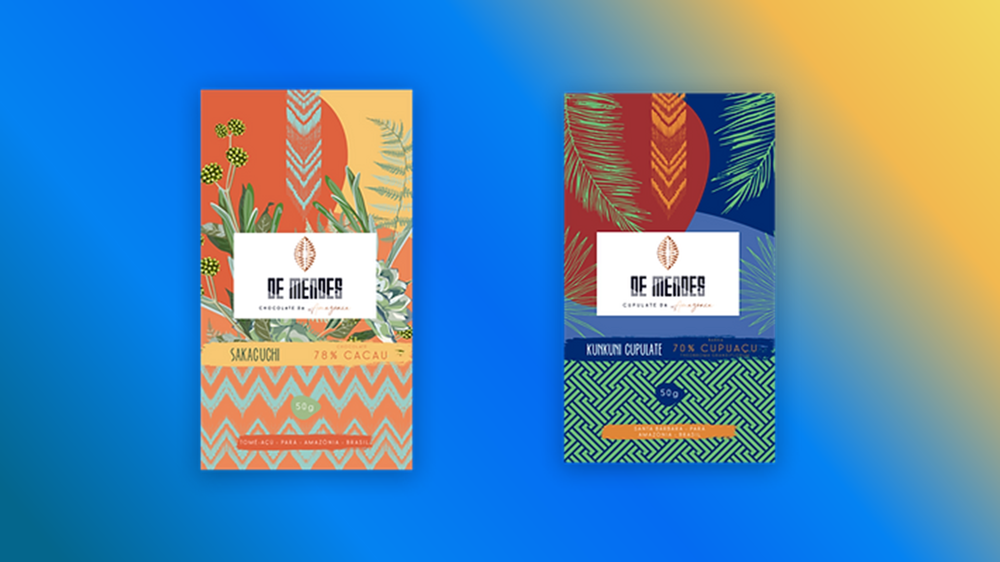
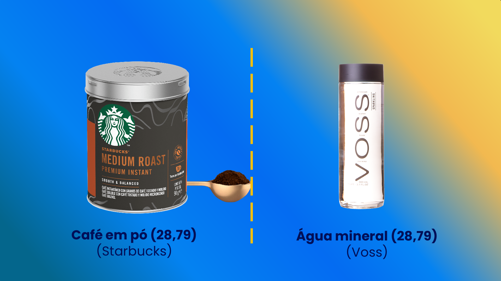

6 Ideias Diferenciadoras para o Agro
Este capítulo apresenta um repertório de ideias diferenciadoras que podem ser aplicadas ao agronegócio. Não são fórmulas prontas, são pontos de partida para descobrir o que torna a sua marca única.
6.1 O repertório de ideias diferenciadoras
Uma “ideia diferenciadora” é um conceito estratégico que ancora o posicionamento da marca. Diferente de um benefício funcional (“nosso café é mais saboroso”) ou de uma tática de suporte (“temos certificação orgânica”), a ideia diferenciadora responde à pergunta: “Qual é a essência do que nos torna diferentes?”
A seguir, apresentamos as principais categorias de ideias diferenciadoras, cada uma contextualizada para o agronegócio brasileiro.
6.2 1. Pioneirismo
Ser o primeiro a fazer algo em um segmento, região ou categoria. O pioneirismo cria uma posição mental difícil de deslocar: a primeira marca a ocupar um espaço na mente do consumidor tende a permanecer lá (Fig. Figura 6.1).
No agro, isso pode se materializar na primeira cooperativa a exportar café diretamente para torrefadores artesanais europeus, no primeiro produtor de mel a implementar rastreabilidade blockchain na região ou na primeira fazenda de cacau a obter certificação de carbono neutro no Nordeste.
Vantagem: Difícil de ser deslocado, quem veio depois será “mais um”.
Risco: O pioneirismo precisa ser mantido e comunicado; se parar de inovar, perde relevância.
6.3 2. Tradição e história
Marcas que se conectam com um passado relevante, familiar, comunitário ou cultural, criam associações de confiança, autenticidade e nostalgia. A Granado (Fig. Figura 6.2) exemplifica como uma marca centenária pode se reinventar sem perder as raízes.

No agro, isso se traduz na fazenda que cultiva café há cinco gerações desde a chegada dos imigrantes, na comunidade quilombola que preserva uma variedade ancestral de mandioca ou na vinícola familiar que mantém os métodos do fundador italiano.
Quando funciona: Quando a história é verdadeira, relevante para o público e conectada ao produto. “Meu avô plantou a primeira muda” só é diferencial se a história for contada de forma que o comprador se conecte emocionalmente.
6.4 3. Especialização
Ser especialista em uma coisa, e comunicar isso com clareza. Em um mercado de generalistas, o especialista se destaca (Fig. Figura 6.3).

No agro, essa estratégia se expressa em declarações como “Produzimos exclusivamente café de altitude acima de 1.100m”, “Somos especializados em genética de gado Wagyu tropical” ou “Nosso mel é exclusivamente de abelhas Jataí nativas da Caatinga”.
O poder da especialização está na percepção de autoridade. O consumidor atribui maior competência a quem faz uma coisa muito bem do que a quem faz muitas coisas razoavelmente bem.
6.5 4. Origem e terroir
A procedência do produto, o solo, o clima, a altitude, a microrregião, pode ser um diferencial poderoso, especialmente quando vinculada a uma Indicação Geográfica (IG) ou a características sensoriais comprovadas.
No agro, basta pensar no Café do Cerrado Mineiro (IG reconhecida), no cacau de Ilhéus (história e terroir únicos), no queijo da Canastra (patrimônio imaterial) ou na uva do Vale dos Vinhedos (primeira IG do Brasil).
A IG é uma ferramenta formal de diferenciação por origem. Ela protege juridicamente a denominação e agrega valor ao produto. Investigue se a sua região e produto podem pleitear ou já possuem uma IG.
6.6 5. Método de fabricação ou produção
Como o produto é feito pode ser tão diferenciador quanto o produto em si. Processos artesanais, técnicas proprietárias, métodos sustentáveis ou inovadores criam interesse e valor (Fig. Figura 6.4).

No agro, isso abrange o café processado pelo método natural e secado em terreiro suspenso, o queijo maturado em caverna com microbiota natural, a cachaça envelhecida em barris de madeira nativa (amburana, jequitibá) e frutas desidratadas por processo solar sem aditivos.
6.7 6. Propósito e visão de mundo
Marcas que se posicionam em torno de um propósito maior, ambiental, social, cultural, criam conexão emocional e relevância que transcende o produto.
No agro, essa abordagem se concretiza em compromissos como “Cada saca de café vendida recupera 1m² de mata atlântica”, “Produção agroflorestal que regenera o bioma enquanto produz”, “Cooperativa que garante renda digna para pequenos agricultores familiares” e “Fazenda escola que forma jovens rurais em técnicas sustentáveis”.
O propósito não pode ser fabricado, precisa ser genuíno e verificável. Greenwashing (falso ambientalismo) e socialwashing (falsa responsabilidade social) são rapidamente detectados e destroem reputação.
6.8 7. Personalidade de marca
A forma como a marca se expressa, seu tom de voz, sua estética, seu comportamento, pode ser um diferencial quando é autêntica e consistente.
Exemplos de personalidades para marcas do agro:
| Personalidade | Expressão | Exemplo |
|---|---|---|
| Rústica e artesanal | Embalagens em papel kraft, tipografia manuscrita, fotos do campo sem filtro | Queijaria de montanha |
| Sofisticada e premium | Design minimalista, comunicação elegante, experiência sensorial | Vinícola boutique |
| Inovadora e tecnológica | Linguagem moderna, dados e rastreabilidade, embalagem inteligente | Startup de proteínas vegetais |
| Acolhedora e familiar | Tom de voz próximo, imagens de família, receitas e histórias | Produtora de geleias artesanais |
| Rebelde e desafiadora | Comunicação provocativa, questiona o status quo | Cervejaria rural artesanal |
6.9 8. Segmentação radical
Não tentar servir a todos, mas escolher um público muito específico e construir tudo para ele. A abordagem “boutique” (Fig. Figura 6.5) ilustra como a segmentação por premium transforma commodities em produtos de desejo.

No agro, exemplos incluem “Produzimos exclusivamente para restaurantes com estrela Michelin”, “Nossos cortes são desenvolvidos para a culinária japonesa” e “Frutas selecionadas para lancheiras infantis saudáveis”.
A segmentação radical gera medo (“vou perder clientes se focar demais”), mas na prática gera clareza, relevância e margens superiores.
6.10 9. Modelo de negócio
Como você comercializa pode ser tão diferenciador quanto o que você comercializa.
No agro, isso se traduz em assinatura mensal de cestas direto do produtor, venda de “cotas” da safra (o consumidor “adota” pés de café e recebe a produção), agroturismo como porta de entrada para venda do produto e marketplaces exclusivos de produtores locais de uma microrregião.
6.11 Combinando ideias
Marcas fortes raramente têm apenas uma ideia diferenciadora. Elas combinam multiple conceitos de forma coerente:
Exemplo hipotético:
Fazenda Nascentes, Especializada em café de altitude (especialização), cultivado em sistema agroflorestal que recupera nascentes d’água (propósito), pela família Souza há três gerações (tradição), com fermentação controlada em método proprietário (fabricação), comercializado por assinatura direta com degustação mensal (modelo de negócio).
Cada elemento reforça os demais. Juntos, criam uma marca multidimensional e praticamente impossível de copiar.
6.12 Exercício prático, Mapeamento de ideias diferenciadoras
6.12.0.1 🌿 Ferramenta: Canvas de Ideias Diferenciadoras
Para cada categoria, avalie se o seu negócio possui ou pode desenvolver:
| Ideia | Temos? | Podemos desenvolver? | Relevância para o público |
|---|---|---|---|
| Pioneirismo | |||
| Tradição/História | |||
| Especialização | |||
| Origem/Terroir | |||
| Método de produção | |||
| Propósito/Visão de mundo | |||
| Personalidade forte | |||
| Segmentação radical | |||
| Modelo de negócio |
Selecione as 2-3 ideias mais fortes e verifique:
- O comprador reconheceria e valorizaria isso?
- É difícil de ser copiado?
- É autêntico, corresponde à verdade do negócio?
Se as três respostas forem sim, você encontrou a base do seu posicionamento.